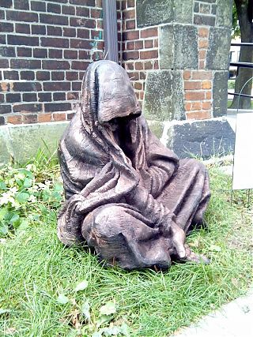

Primary site navigation menu. Use class="active" on the current page's list item.
Preview
Widget
.service-schedule
Sidebar widget for weekly service schedule. Use within an aside or .widget container.
Preview
Weekly Services
Mon - Wed: Evening Prayer, 4:30pm
Tuesdays: Meditation & Bible Study, 7:30pm
(Zoom)
Wednesdays: Said Mass, 12 noon
Alert
.alert-box
Highlighted alert box for announcements, events, or service changes. Supports modifier classes like .christmas for themed styling.
Preview
Christmas Services
December 24, 9 pm: Christmas Eve Mass December 25, 10:30 am: Christmas Day Service
Content
.welcome
Main welcome content area for homepage. Includes optional .featured-image floated right.
Preview
Welcome to St. Stephen's
We are an inclusive and affirming Anglican community in the
heart of the city, where we strive to live out God's mission of
compassion and justice for all people, and for all of creation.

We are committed to being a community of solidarity with those
who have been pushed to the margins of our society, and to the
task of building a better world.
Content
.site-previews
Three-column grid for program highlights. Each .preview-block contains a title, description, and link.
Preview
Weekend Breakfast Programme
Hot meals served every Saturday and Sunday from 7:00am to
8:30am. No questions asked. All are welcome.